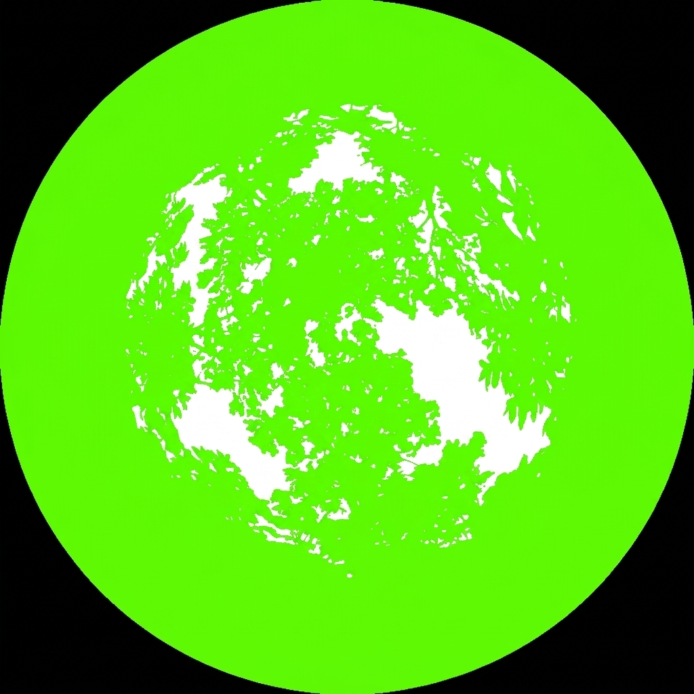
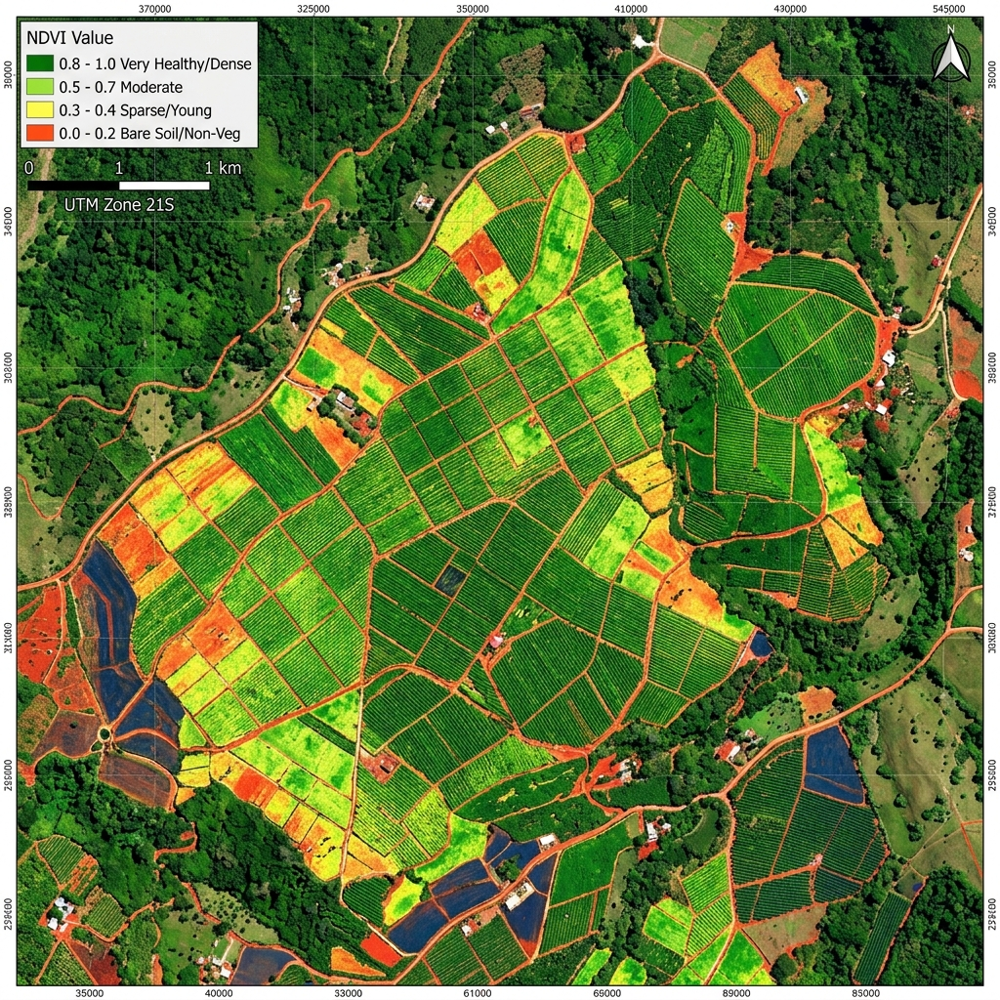

Evalúe el régimen de sombra de su cafetal mediante Inteligencia Artificial y datos de Observación de la Tierra.

Clasificación técnica basada en la cobertura vegetal (30% - 50%). Proporciona un equilibrio adecuado entre protección solar y entrada de luz para la fotosíntesis del café, favoreciendo la maduración lenta del grano y la conservación del suelo.
Mantener el nivel actual, realizar monitoreo constante en época seca.
Realizar recepas sanitarias post-cosecha para rejuvenecimiento.
Inga (Chalúm/Cuje) para fijación de nitrógeno y sombra regulada.
Conservar barreras rompevientos en zonas de alta pendiente.
Nivel de sombra actual minimiza riesgo de brote severo de roya.
Sugerida en 6 meses (cambio de estación).
